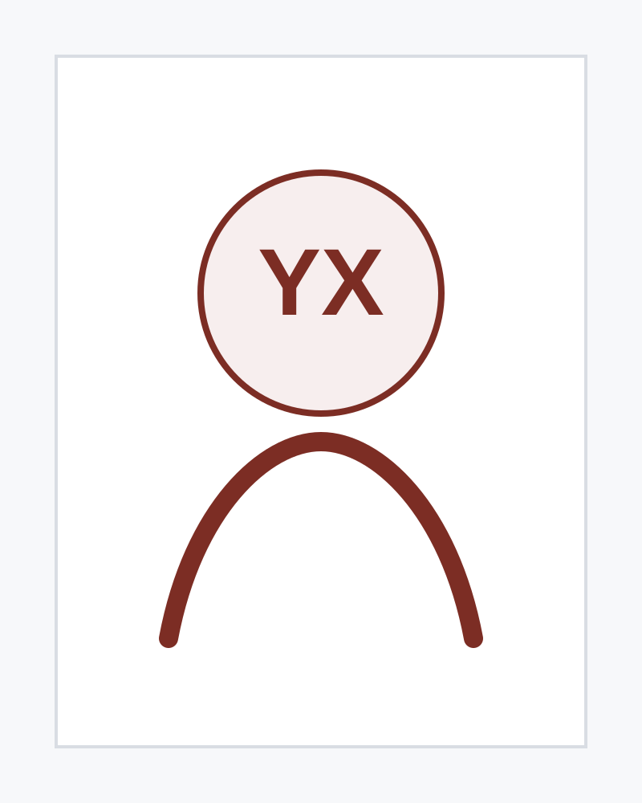

Research Interests
- Environmental economics
- International trade
- Urban economics
- Labor economics
World Economy
I am a PhD student in World Economy at the School of Frontier Interdisciplinary Studies, Wuhan University.
My research interests are environmental economics, international trade, urban economics, and labor economics. I previously studied at the University of California, Riverside, the University of Edinburgh, and IE University, and interned at the United Nations Economic and Social Commission for Asia and the Pacific (ESCAP).

I am currently based at Wuhan University. My academic training spans economics, ecological economics, strategy, and world economy across institutions in China, the United States, the United Kingdom, and Spain.